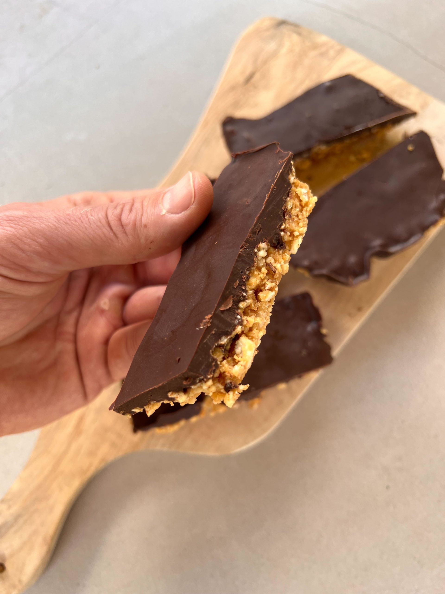

Rice Cake Bars

With almost zero prep time and effort in the kitchen, you can whip up these delicious chocolate rice cake bars!
Find yourself being hit by the chocolate craving more often than you'd like? Make these healthy and lip-smacking chocolate rice cake bars in a batch and store them in your refrigerator. You'll have a quick snack handy!
Ingredients
- 6 rice cakes, crushed
- 1/2 cup natural peanut butter (you can substitute with melted biscoff if needed)
- 1/3 cup honey or liquid sweetener of choice
- 1/2 cup dark chocolate chips (you can substitute with 1 dark chocolate bar if needed)
- 1 tsp vanilla extract
- 1/4 cup crushed nuts (preferably hazelnuts)
- 1 tsp flaky salt
- 2 tsp coconut or olive oil
Steps
- Line a 9x5 loaf pan or 8x8 square pan with parchment paper.
- In a medium bowl, mix together the peanut butter or biscoff, honey, an vanilla extract until smooth.
- Crumble in the rice cakes and mix. Add the chopped peanuts and mix again
- Transfer the rice cake mixture into the loaf/square pan, and pack the mixture tightly into the pan, ensuring it is evenly distributed.
- Melt the chocolate and oil together.
- Sprinkle the chopped nuts on top and pour the melted chocolate on top. Spread until it evenly coats the rice cake mixture.
- Sprinkle with flaky sea salt. Transfer into the fridge for up to 1 hour, until the chocolate is set.